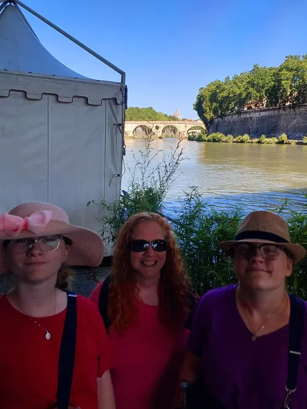
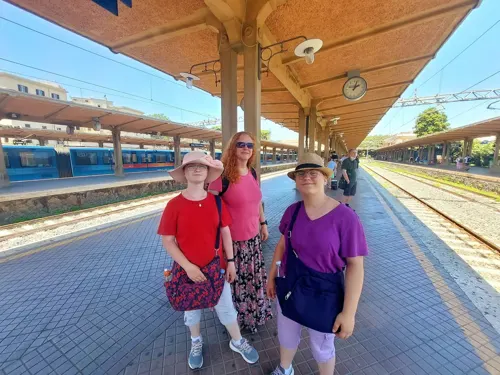
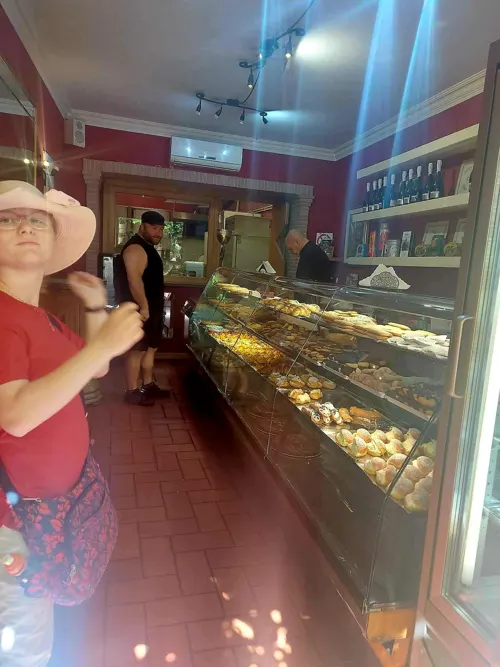
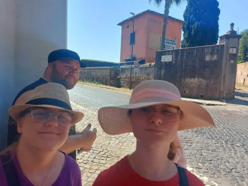
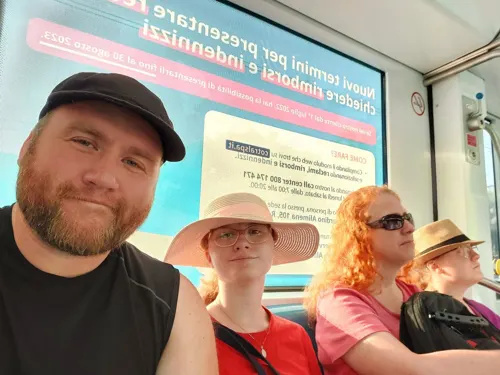

Sunday flea market, Rome
June 25, 2023

On June 25, 2023 we went to the Porta Portese flea market in Rome.
The morning covered the market stalls, a walk by the river, and the train ride back.










